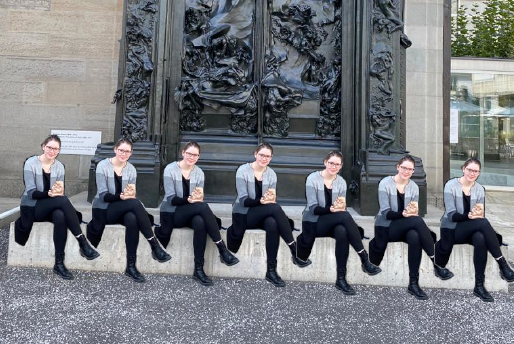

12 Fragen über Urheber recht
1. Was ist Urheber-Recht?
Urheber-recht ist das Recht am Eigenen Werk oder Geistigem Eigentum.
2. Wie bekommt man Urheber-Recht?
Im Gegensatz zu Patenten muss man keine Dokumente ausfüllen oder den Urheber anmelden. Sobald man ein Werk im Zusammenhang mit dem eigenen Namen oder einem Pseudonym veröffentlicht gilt diese Person als Urheber solange nichts anderes bewiesen werden kann.
3. Was ist alles vom Urheber recht geschützt?
Alles was als Werk gilt. Werke sind selbsterstellte Produkte wie Bilder, Skulpturen oder Musik. Auch Programme und wissenschaftliche Arbeiten haben einen Urheber.
4. Was darf man als Urheber?
Der Urheber hat das alleinige Recht zu bestimmen wie und zu was das Werk verwendet werden darf. Er kann das Werk oder Rechte am Werk verkaufen und bestimmen ob und wie es geändert werden darf.
5. Kann man das Urheber-Recht für Werke von anderen erhalten?
Urheber-Recht ist übertragbar und vererbbar. So können Kunstwerke, Filme und auch Bücher verkauft werden.
6. Darf das Urheber-Recht auch umgangen werden?
Im persönlichen Raum (Familie und Freunde) darf das Urheber-Recht umgangen werden. So darf man im persönlichen Raum Filme zeigen und Bücher ausleihen. Auch Lehrer dürfen zu Bildungszwecken das Urheber-Recht bei ihren Klassen umgehen.
7. Darf jemand ein Foto von mir machen und es Veröffentlichen?
In der Schweiz gilt das Recht am eignen Bild. Somit darf jeder Mensch selbst entscheiden ob ein Bild von ihm veröffentlicht werden darf. Personen auf dem Bild müssen vor der Veröffentlichung gefragt werden.
8. Was ist mit Bildern mit einer grossen Menschenmenge?
Bilder im öffentlichen Raum mit grossen Personengruppen dürfen ohne vorherige Absprache veröffentlicht werden. Diese Regel gilt nur wenn keine Person im Fokus des Bildes steht. Sollte jemand klar hervorgehoben sein, so muss die Person vor der Veröffentlichung gefragt werden.
9. Ich bin im Hintergrund eines Bilds vom Bahnhof, will aber nicht. Kann ich was machen?
Du kannst beim Verlag/Fotograf nachfragen und verlangen vom Foto entfernt zu werden. So kannst du entweder rausgeschnitten werden oder unkenntlich gemacht werden.
10. Darf ich Musik für den Hintergrund meines Videos verwenden, ohne nachzufragen?
11. Wenn ich meine Bilder online poste und die Seite verlang das ich das Urheberrecht übertrage, verliere ich mein recht am eigenen Bild?
Nein. Solange nicht klar spezifiziert ist wie das Werk verwendet wird und welche rechte man überträgt, bleiben die rechte beim Ersteller des Werks.
12. Ist Streaming legal?
In der Schweiz? Ja. Man darf Filme und Videos online streamen und diese sogar herunterladen. Lediglich das verbreiten dieser Werke ist illegal.